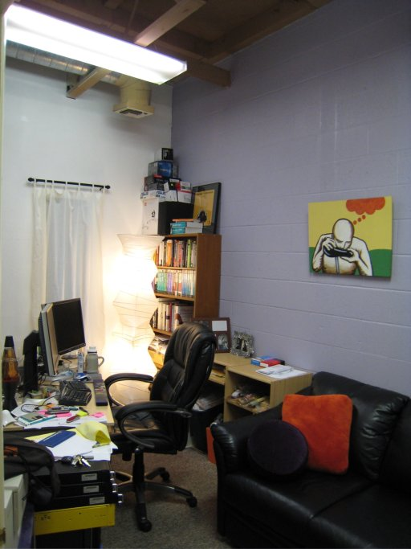

Offices of Music 2.0 - MusicBrainz
MusicBrainz provides deep music metadata for Music 2.0 - its founder, Robert Kaye runs MusicBrainz as a non-profit - relying on donations, licensing fees and the kindness of friends and strangers to keep the site going. Here's MusicBrainz world headquarters:

Not to say that Robert builds MusicBrainz all alone - there are many, many volunteers that make MusicBrainz happen. Here's a photo from an MB Summit (notice all of the last.fm guys):

And the rack that runs MusicBrainz:


(alright, these are not 'office' pictures, but who can resist photos of a nice rack!)
Update:
Robert has sent me some updated shots of his office. Robert says: my office has changed a bit since then. Including real burning man art on my walls! To find out what is in the blurred out box, you'll have to visit my office. And no, its not the obvious. :)
